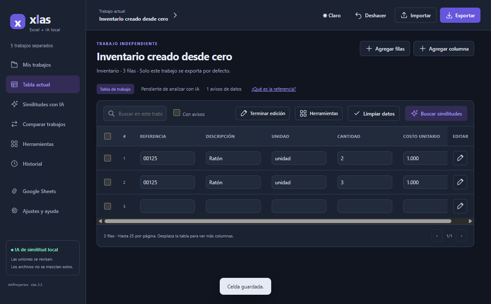

Ideas que
se vuelven
herramientas.
Soy Juan Esteban Herrera. Desarrollo aplicaciones web y de escritorio, exploro la IA local y construyo soluciones para las tareas de todos los días.

Menos caos en tus tablas.
01PROYECTOS / CÓDIGO EN ACCIÓN
Hechos para
resolver algo.
Una selección de lo que construyo y aprendo. Abre cada proyecto para ver el problema, mi aporte y cómo está hecho.
No encontré ese proyecto.
Prueba con Java, redes, IA o el nombre de una aplicación.
EL RESTO DE LA BITÁCORAMás herramientas, más exploraciones.
02LA PERSONA DETRÁS DEL CÓDIGO
La curiosidad
es el punto
de partida.
Me gusta entender cómo funcionan las cosas. Y, cuando algo puede hacerse mejor, intentar construirlo.
Soy Técnico Profesional en Soporte de Sistemas e Informática, graduado el 26 de febrero de 2026, y estudiante de Ingeniería de Sistemas en la CUN. Mi experiencia se ha formado en proyectos personales, académicos y colaborativos.
Me muevo entre el backend, las interfaces, el escritorio y las redes. Esa mezcla me ayuda a pensar tanto en lo que necesita una persona como en lo que ocurre detrás de la pantalla.
Uso IA como apoyo para desarrollar y documentar. La revisión del código, las pruebas y el criterio siguen siendo parte del trabajo.
03MI CAJA DE HERRAMIENTAS
Tecnología
con contexto.
Lo que utilizo en mis proyectos y lo que sigo estudiando. Cada herramienta tiene un lugar y un propósito.
También tengo formación en Excel básico e intermedio, práctica con macros y uso de Word, PowerPoint e IA para organizar información y documentación. Continúo mi preparación en redes y CCNA.
04FORMACIÓN / EN CONSTRUCCIÓN CONTINUA
Aprender.
Aplicar. Repetir.
Formación técnica, carrera universitaria en curso y una ruta de aprendizaje que llevo a proyectos reales.
05EL SIGUIENTE PROYECTO
¿Construimos
algo útil?
Busco oportunidades junior y proyectos de alcance definido. Si mi forma de trabajar encaja con lo que necesitas, conversemos.
Escríbeme